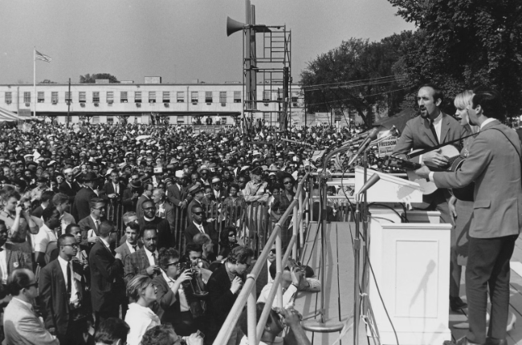
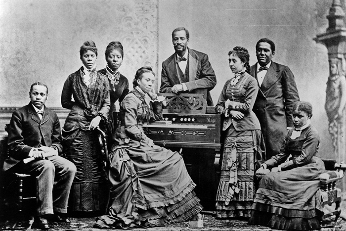
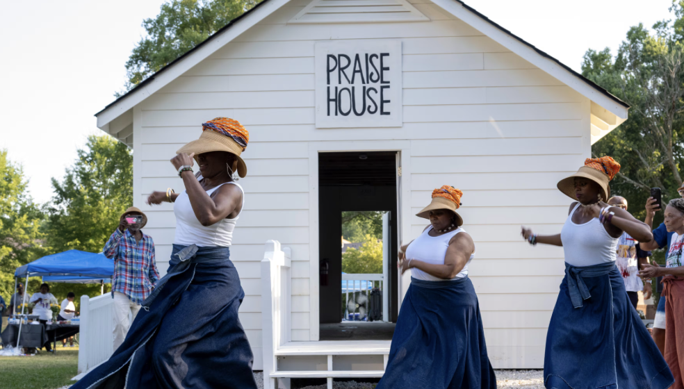
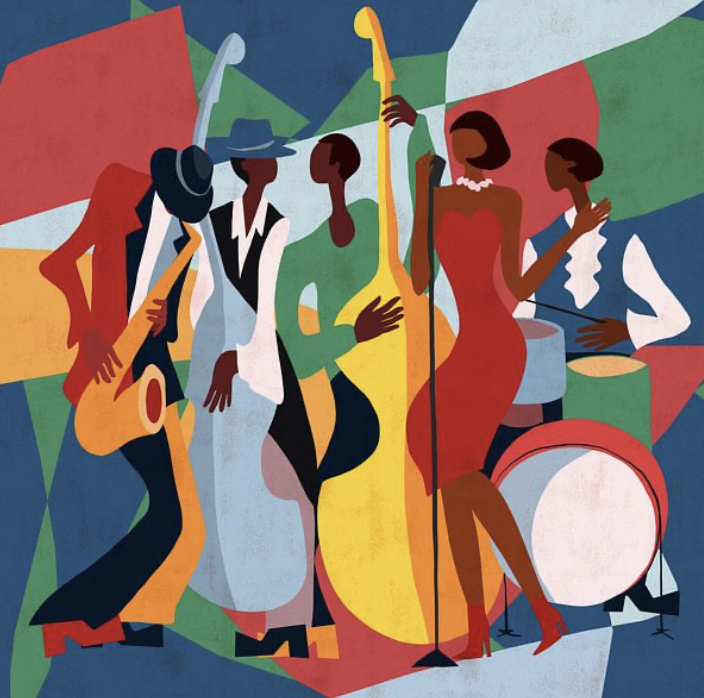
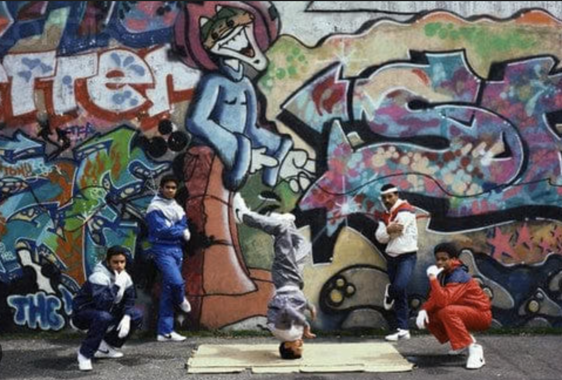
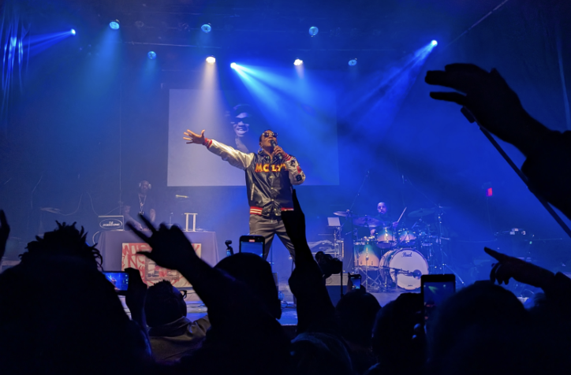
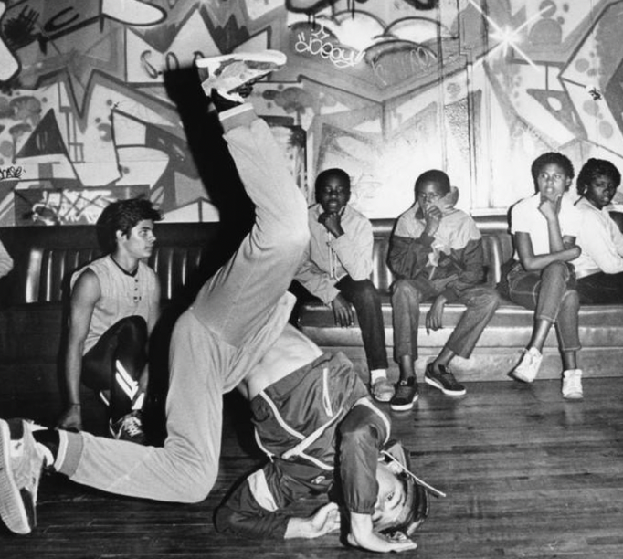
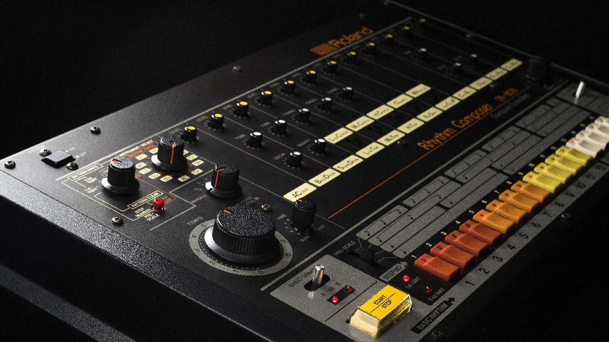
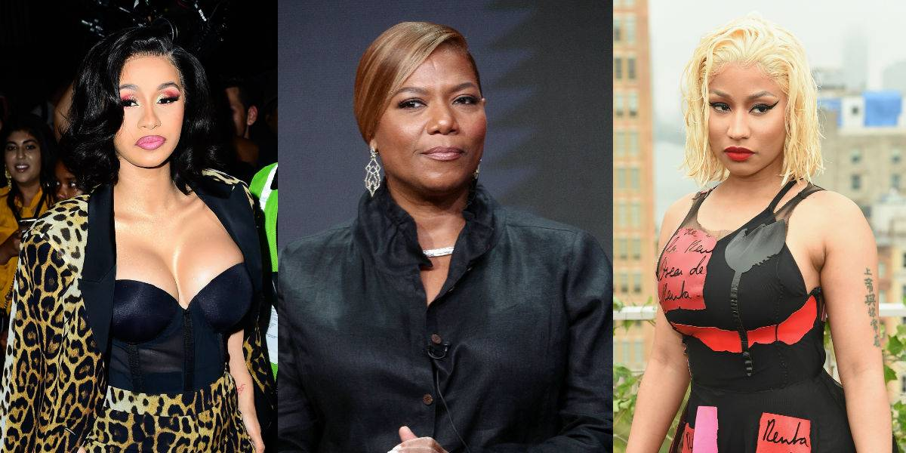

The Acoustic Archive: Unboxing the DNA of Sound
Spirituals, jazz, and hip-hop all show how music became a voice for survival, resistance, and celebration.
Return to HomeSpirituals: The Roots of Resilience
Pre-1865
The foundations of African American music were laid by enslaved people brought from West Africa. Stripped of drums and many traditional dances by slaveholders, they found new ways to express their joys, pain, and hope.
- Praise houses and secret meetings: While allowed to attend Christian services, many enslaved people gathered in secret bush or camp meetings, blending Christian theology with African rhythmic traditions.
- From corn ditties to spirituals: In the late 1700s, rural workers sang corn ditties, precursors to spirituals. Unlike standard hymns, these songs were deeply personal and reflected the reality of bondage.
- The double meaning: Many spirituals served as coded maps for the Underground Railroad.
- "Jordan" or "The Promised Land" often referred to the North or Canada.
- "Wade in the Water" gave practical guidance to move through water and avoid tracking dogs.
- "Swing Low, Sweet Chariot" could signal that a conductor was near.
A New Era of Education (1865-1925)
- Fisk Jubilee Singers: Touring to help save Fisk University, students introduced the world to Negro spirituals as a formal art form.
- Rise of the Sanctified Church: By the 1890s, Holiness and Sanctified churches reintroduced high-energy worship, hand-clapping, and foot-stomping rhythms.
- Classical influence: Composers arranged spirituals with European classical structures, bringing them into concert halls and theaters.
The Birth of Gospel and The Black Renaissance (1925-1985)
- Thomas A. Dorsey, known as the Father of Gospel Music, fused Biblical themes with everyday struggles of the Great Migration.
- Sister Rosetta Tharpe brought Gospel into nightclubs in the 1930s, showing its power beyond church walls.
- In the Civil Rights era, songs like "We Shall Overcome" became movement anthems for strength and unity.
A National Legacy (1985-Present)
- National recognition of Martin Luther King Jr. Day and Black History Month helped cement this heritage in the American story.
- Gospel now has global reach, while remaining a sacred vessel for African American identity, faith, and endurance.


Jazz: America's Classical Music
Jazz emerged from African American communities in New Orleans after the Civil War, growing from humble origins into the first sophisticated instrumental art form original to the United States.
The Foundations: Blues and Ragtime
- Blues roots came from field hollers, work songs, and spirituals, shaping the 12-bar framework and blue scales.
- Ragtime blended West African rhythms with European structures and introduced syncopated, ragged energy that fed Jazz.
The New Orleans Melting Pot
- African percussion met European harmony and Afro-Caribbean flavor.
- Jazz reflected double consciousness: technical precision paired with improvisational freedom.
- Unlike rigid classical forms, each performance became a search for truth through the instrument.
The Jazz Age: Rebellion and Unity (1920s-1930s)
- During segregation, Jazz crossed boundaries through radio and live performance.
- Migration from New Orleans to Chicago and New York helped the style spread nationwide.
- For many Black musicians, Jazz created rare paths to social mobility.
The Sound of Protest and Pain
- Jazz held joy and suffering together, telling honest stories of Black life.
- Billie Holiday's "Strange Fruit" (1939) became a landmark protest song confronting racial terror.
The King of Swing Controversy
- Black artists created Jazz, but white artists were often given more commercial visibility.
- Industry promotion frequently favored safer public images, making fame harder for many original innovators.
Legendary Pioneers
| Artist | Contribution |
|---|---|
| Bessie Smith | The Empress of the Blues and one of the first major Black recording stars. |
| Duke Ellington | Elevated Jazz through orchestral complexity and masterful composition. |
| Billie Holiday | Revolutionized vocal Jazz with improvisational phrasing and emotional depth. |
| Louis Armstrong | Transformed Jazz into a soloist-centered art form known worldwide. |



Jazz later helped shape Rhythm and Blues (R&B), which contributed to the rise of Rock n' Roll and transformed global popular music.
Rap and Hip-Hop: The Voice of a Generation
Hip-Hop was born in the Bronx in the early 1970s as a grassroots response to the moment, created by African American, Afro-Caribbean, and Latino communities. From block parties, it grew into a global cultural force and a major platform for social commentary.
The Four Pillars of Hip-Hop
- The MC (Master of Ceremonies): lyricist and crowd leader.
- The DJ (Disc Jockey): architect of loops, breaks, and scratches.
- Breakdancing: physical expression of rhythm.
- Graffiti art: visual language of the streets.
Era 1: Old School (1970s-Mid-1980s)
- DJ Kool Herc and Afrika Bambaataa pioneered break-based DJ methods.
- "Rapper's Delight" (1979) proved commercial potential for Hip-Hop.
- The 808 drum machine and synthesizers pushed the sound into new territory.
Era 2: Golden Age and New School (Mid-1980s-Mid-1990s)
- Public Enemy and KRS-One advanced conscious rap with political and Afrocentric messages.
- N.W.A and Ice-T popularized gangsta rap as commentary on systemic oppression and policing.
- Queen Latifah, Salt-N-Pepa, and MC Lyte broke barriers for women in rap.
Era 3: Regional Explosions and Southern Takeover (Late 1990s-2010s)
- Atlanta: Crunk evolved into Trap with heavy bass and rapid hi-hats.
- New Orleans: Bounce centered dance energy and parade-style rhythm.
- Houston: DJ Screw's chopped and screwed style introduced a slowed, hypnotic sound.
Modern Era: Mainstream and Activism (2010s-Present)
- Artists such as Kendrick Lamar and J. Cole brought conscious rap back to the center of mainstream charts.
- Songs like "Alright" (Kendrick Lamar-2015) became modern protest anthems connected to social justice movements.
- Nicki Minaj and Cardi B expanded themes of ownership, branding, and financial independence for women across the board.
The Oral Tradition: From Toasting to Flow
- Boasting: skill-centered self-presentation and confidence.
- Playing the dozens: competitive verbal sparring and wit.
- Signifyin': layered wordplay and strategic indirect critique.
Quick Guide: Hip-Hop Production Tools
| Tool | Function |
|---|---|
| Turntables | Used for scratching and juggling beats in real time. |
| 808 Drum Machine | Created deep bass central to many Southern styles. |
| Sampler | Repurposes snippets of Jazz, Soul, and Funk into new tracks. |
| MIDI and Laptops | Modern production setup enabling DIY creation and global sharing. |
Rap and Hip-Hop Photo Gallery
Hover over each image to see a short description.







